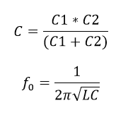

which I will talk about later. The Colpitts oscillator is a simple oscillator, it uses a transistor amplifier, the amplifier type is a "Common Base amplifier" which I am using (fig1.2), you can use some other amplifiers too. In this type of amplifier,
- Input is connected to the Emitter
- Output is taken from the collector
Features of "Common Base" Amplifier-
- Low input impedance
- Moderate/High gain
- ~ Unity current gain
Notice (fig1.1) that there are two resistors forming a resistor divider, so connecting a potentiometer and lowering the base current opens or makes the transistor less conductive lowering the
current at the collector which reduces the amplitude of the LC circuit. Now provide some audio or whatever signal with some biasing voltage at the base.
which should be conductive at the
positive region and less conductive at the negative region of the signal, "It is an NPN transistor ".Since a capacitor is connected at the emitter (Input of the amp) of the transistor so it somehow manages to
oscillate, So the carrier signal also modulates with the input signal. And also it appears to me that the transistor is always ON or is in the active region. The frequency depends on the
inductor and the capacitor in the circuit, Which you can calculate by this equation-.

Colpitts oscillator schematic-

Common Base Amplifier (fig1.2)

Common Base Amplifier Circuit (fig1.1)-

AM Tx schematic-